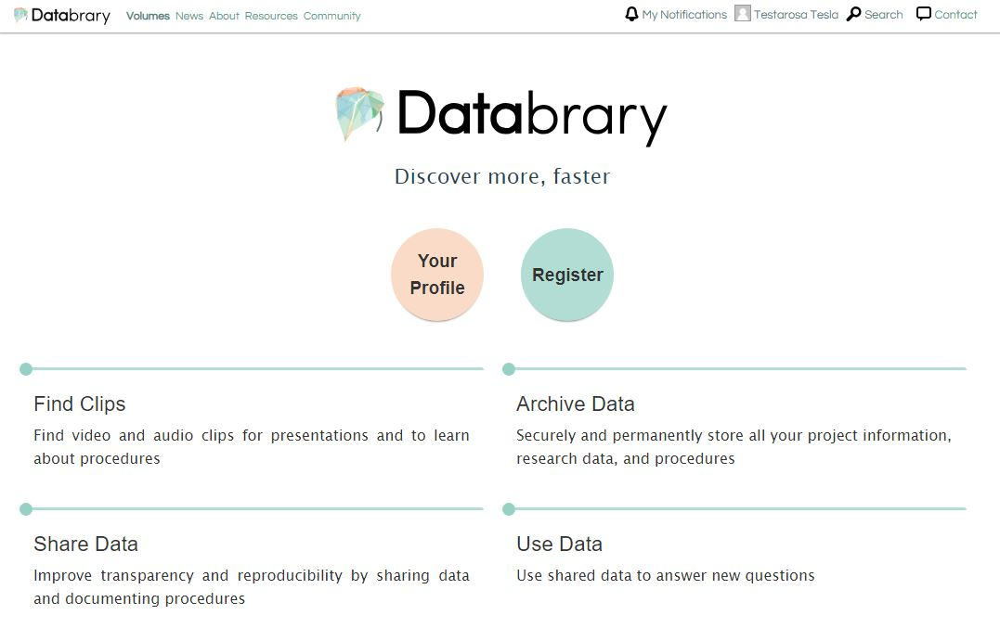
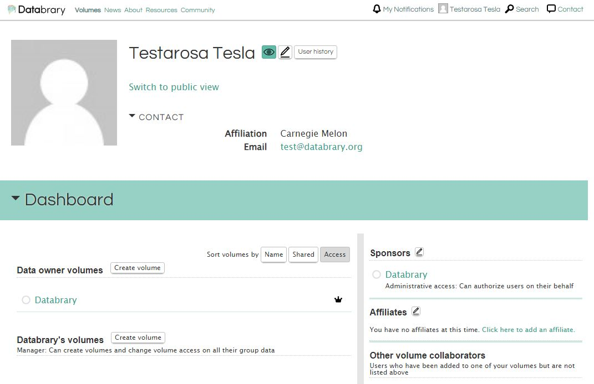

Chapter 4 Create a new volume
Step 1: Login/Go to Profile
Click the pink Login button in the middle of the Databrary homepage to sign into your Databrary account.

Click on Your Profile

Step 2: Begin Create Volume
Click on Create Volume to the right of Data Owner Volumes

There are multiple tabs on the left side of the screen that need to be completed to set up a new volume. These tabs need to be completed in order.
Step 3: Enter Dataset Overview
Volume Overview is created by choosing if the volume is related to a published resource and answering the related questions (Title, Description, Internal Short Name and additional citation information if necessary).
Please describe the context of data collection and the types of data uploaded (e.g. video, pictures, )
If you need this data to be associated with a DOI, please answer YES to the question Does this volume correspond to a published paper or resource
When all items are entered, select Save

Step 4: Manage Access
Next, go to Manage Access to choose volume sharing options and add collaborators (faculty, staff, students) that already have an account on Databrary that is Sponsored by an Institution or an Authorized Investigator.
Click Save when done.
Please be sure to pick the appropriate sharing setting, Private, Share Volume Overview Only or Share Entire Volume. The default sharing setting is Private.
Please note: Only the Authorized Investigator who created this volume can ‘Share Entire Volume’

Step 5: Design Spreadsheet
Now, go to Design Spreadsheet and choose all the categories and sub-categories you would like to include in your spreadsheet for participant/session metadata.

Step 6: Enter Data
Now it is time to Enter Data. There are two options:
Upload a participant metadata file.
See video instructions to upload participant metadata or follow the instructions below.
What is an appropriately formatted .csv file?
- ensure that the Header row is exactly the same as the Spreadsheet Preview in the
Design Spreadsheettab.

so this .csv file would look like:

Now it is time to upload the participant .csv file.
Click the participant tab. Then Choose File to navigate to the appropriate file. Finally click Upload.

You will see a window that summarizes the data uploaded and will point out any potential errors (e.g. wrong header names, missing data)

Please review these data
Then click Yes.
Now the uploaded data will show like this.

After the participant metadata is uploaded, the data regarding the testing session and any relevant filed get uploaded individually. See video instructions for uploading participant session data or follow the instructions below.
Click on the folder tab
Click on add folder and choose to add a session or materials folder.

Session folders are for participant sessions and materials folders are for thing related to the study such as surveys used, sample consent forms, and stimuli.
Continue working HERE

Step 7: Add Links
Please share more information in your Databrary Volume using Add Links. Here you will want to add links to any outside resources related to this dataset (e.g. published paper, github repository)

Step 8: List Funding
Finally, please share your funding source for your volume in List Funding. If your funding source is not listed here, please email Databrary Staff at contact@databrary.org to have it added.